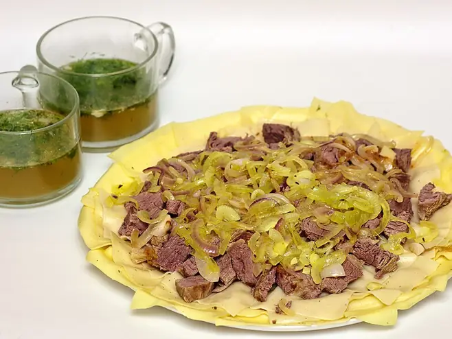

Фото: Pannet, CC BY-SA 4.0

Бешбармак
Отварная баранина с тонкими пластами домашнего теста и луком в бульоне
210 мин6 порц.796 ккал на порциюБ 49 · Ж 44 · У 52Среднеазиатская кухня
Продукты на 6 порц.
- Баранина1500 г
- Вода4 л
- Лук репчатый3 шт
- Лавровый лист2 шт
- Соль1 ст. л.
- Перец чёрный молотый1 ч. л.
- Мука пшеничная2,5 стак.
- Яйцо куриное2 шт
- Зелёный лук по желаниюпо вкусу
Как готовить
- Баранину на кости (или говядину) залейте 4 л холодной воды, доведите до кипения на сильном огне и снимите пену.
- Положите одну целую луковицу и лавровый лист, убавьте огонь до слабого и варите 2,5 часа. За 30 минут до конца посолите.
- Пока варится мясо, замесите из муки, яиц, 120 мл воды и щепотки соли крутое тесто. Оставьте под плёнкой на 30 минут.
- Раскатайте тесто очень тонко, до 1 мм, нарежьте ромбами или квадратами 6×6 см и подсушите на столе 15 минут.
- Оставшийся лук нарежьте полукольцами, залейте половником горячего бульона, поперчите и оставьте на 5 минут под крышкой.
- Выньте мясо, отделите от кости и нарежьте тонкими ломтиками.
- Варите пласты теста в кипящем бульоне порциями 3-4 минуты, пока не всплывут и не станут мягкими.
- Выложите на большое блюдо тесто, сверху мясо и лук с бульоном. Оставшийся бульон подайте в пиалах.
Совет. Это упрощённый вариант: в Казахстане и Киргизии в бешбармак добавляют конину и казы. Бульон не должен бурлить, иначе станет мутным.